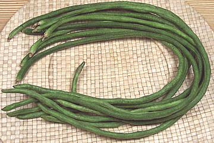

Long Beans

Unlike it's close relative the African
Black-eyed Pea, these beans are grown only for the pod.
These pods are much meatier than the black-eye pod, with small seeds
spaced far apart. The flavor is quite similar. While often called
Yardlong Beans they actually top out at about 28 inches. The photo
specimens were typically 3/8 inch in diameter and the longest was 26
inches, but they are commonly a little smaller.
There is also a "white" variety, actually a light yellow-green, but
these are less available, more expensive and found only occasionally in
large Asian markets. These beans are important to the cuisines of
Asia, particularly Southeast Asia, so are widely grown in California.
They are a traditional food in tropical Africa and may have originated
there. They have also become quite popular in Caribbean cuisines.
More on Beans, Peas & Lentils.
Long beans are eaten raw in salads, particularly in Thailand, where
they will be quite sweet compared to other beans, but they are more
commonly cooked, throughout southern India and Southeast Asia. I use them
in African or Asian stew that calls for Green Beans, as they hold up to
long cooking much better.
Buying:
Long beans are available in markets serving
Southeast Asian communities and around here even in regular produce
markets and farmer's markets. Look for fairly narrow beans that are dark
green and not at all shriveled. If overripe they will be lighter in
color, lumpy and feel hollow. They will keep for up to 5 days loosely
wrapped in the refrigerator.
Substitution:
Long beans are imperfectly interchangeable
with green beans because the size, flavor and texture are significantly
different. Long beans cook firmer, have a darker flavor and are
distinctly sweet. If you must use green beans adjust the recipe for
cooking time as green beans overcook very easily compared to long beans.
Health:
Long beans are a very good
source of vitamin C, foliate, magnesium and manganese as well as a good
source of protein, vitamin A, thiamin, riboflavin, iron, phosphorus, and
potassium.
bp_longz 070415 - www.clovegarden.com
©Andrew Grygus - agryg@clovegaren.com - Photos on
this page © cg1 - Linking to and
non-commercial use of this page permitted